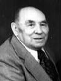

fiche familiale
*******************************************************************************
Adolphe Ringuette
décède à l'âge de 71 ans
Naissance: 17 août 1869 à Ste-Ursule, cté Maskinongé
Parrain Romuald Racine son oncle, marraine Méline Lambert sa tante.
Décès: 28 jan 1941 à Ville-Marie, cté Témiscamingue
Sépulture: 31 jan 1941 au cimetière de Ville-Marie
Parrain de Fernande Rivest
Père: Georges Ringuette
Mère: Aurelie Lambert
Mariage: 7 nov 1899 à Grand-Mère, cté Champlain
Épouse: Clérina-Florida Bellemare
décède à l'âge de 87 ans
Naissance: 22 mai 1879 à Shawinigan, cté St-Maurice
Baptême: 22 mai 1879 à St-Boniface-Shawinigan, cté St-Maurice
Dite Clérina
Parrain Sévère Dugré, marraine Émilie Grenier sa grand-mère.
Décès: 16 mars 1967 à Ville-Marie, cté Témiscamingue
Sépulture: 19 mars 1967 au cimetière de Ville-Marie
Marraine de Fernande Rivest
Père: Élie-Léonard Bellemare
Mère: Marie-Zéphire Bourassa
*******************************************************************************
  |
Enfant 1 Marie-Anna Ringuette décède à l'âge de 91 ans. Naissance le 4 fév 1901 à Grand-Mère, cté Champlain Décès le 2 juin 1992 à Ville-Marie (ses ancêtres) Mariage le 22 avril 1924 à Notre-Dame-du-Rosaire de Ville-Marie Conjoint: Donatien Rivet Rivest n. 20 aoû 1902 d. 24 oct 1986 (sa famille) |
Enfant 2 Joseph-Ephrem Ringuette
décède à l'âge de 83 ans
Naissance: 28 juin 1902 à Grand-Mère, cté Champlain
Parrain Arthur Ringuette oncle, marraine Aldéa Lambert tante.
Décès: 30 jan 1986 à Ville-Marie, cté Témiscamingue
Sépulture: 3 fév 1986 au cimetière de Ville-Marie
Mariage le 24 sep 1934 à St-Placide de Béarn
Conjointe: Rosalie Caya n. 3 oct 1912 d. 20 jul 1988
-------------------------------------------------------------------------------
Enfant 3 Emma Ringuette
décède à l'âge de 86 ans
Naissance: 3 oct 1903 à Grand-Mère, cté Champlain
Baptême: 4 oct 1903 à Grand-Mère
Parrain Hector Bellemare oncle, marraine Emma Pélerin tante.
Décès: 10 mai 1990 à Ville-Marie, cté Témiscamingue
Sépulture: 14 mai 1990 au cimetière de Ville-Marie
Marraine de Maurice Rivest.
Mariage le 2 juin 1926 à Notre-Dame-du-Rosaire de Ville-Marie
Conjoint: Firmin Bergounhon n. 4 mai 1896 d. 26 nov 1981
-------------------------------------------------------------------------------
Enfant 4 Rose Ringuette
décède à l'âge de 59 ans
Naissance: 9 juin 1905 à Grand-Mère, cté Champlain
Baptisée: Rosa, Marie, Azilda
Parrain Alphonse Lambert, marraine Azilda Paquin, cousins germain de son père.
Décès: 15 août 1964 à Guigues, cté Témiscamingue
Sépulture: au cimetière de Guigues
Marraine de Georges Rivest.
Mariage le 21 jul 1926 à Notre-Dame-du-Rosaire de Ville-Marie
Conjoint: Georges Lafond n. 28 nov 1901 d. 24 mai 1985
-------------------------------------------------------------------------------
Enfant 5 Édouard Ringuette
décède à l'âge de 89 ans
Naissance: 1 oct 1907 à Laverlochère, cté Témiscamingue
Baptême: 13 oct 1907 à St-Isidore de Laverlochère
Parrain Arthur Lambert oncle, marraine Clara Bellemare tante.
Décès: 13 jul 1997 à Ville-Marie, cté Témiscamingue
Sépulture: 15 jul 1997 au cimetière de Ville-Marie
Mariage le 12 jul 1950 à Notre-Dame-du-Rosaire de Ville-Marie
Conjointe: Laura Ducharme n. 19 avr 1906 d. 9 fév 2000
-------------------------------------------------------------------------------
Enfant 6 Dianis Ringuette
décède à l'âge de 85 ans
Naissance: 22 mars 1909 à Ville-Marie
Parrain Joseph Patry, marraine Délima Baril, amis de ses parents.
Décès: 21 jan 1995 à Ville-Marie
Sépulture: 24 jan 1995 au cimetière de Ville-Marie
Mariage le 22 aoû 1934 à St-Bruno de Guigues
Conjointe: Laurette Côté n. 12 jan 1910 d. 11 oct 2005
-------------------------------------------------------------------------------
Enfant 7 Eugène Ringuette
décède à l'âge de 89 ans
Naissance: 11 fév 1911 à Ville-Marie
Baptême: 18 fév 1911 à Notre-Dame-du-Rosaire de Ville-Marie
Parrain son frère Joseph, marraine sa soeur Marie-Anna.
Décès: 9 août 2000 à Ville-Marie
Sépulture: 11 août 2000 au cimetière de Ville-Marie
Mariage le 15 nov 1944 à Notre-Dame-du-Rosaire de Ville-Marie
Conjointe: Colette Gamelin n. 4 nov 1913
-------------------------------------------------------------------------------
Enfant 8 Émile Ringuette
décède à l'âge de 85 ans
Naissance: 5 jan 1913 à Ville-Marie
Parrain Hippolyte Denis, marraine Audélie Robitaille, amis de ses parents.
Décès: 7 fév 1998 à Ville-Marie
Funérailles: 10 fév 1998 à Notre-Dame-du-Rosaire de Ville-Marie
Sépulture: au cimetière de Laverlochère
Mariage le 31 déc 1942 à Notre-Dame-du-Rosaire de Ville-Marie
Conjointe: Irène Bourbeau n. 4 août 1914 d. 27 jul 1981
-------------------------------------------------------------------------------
Enfant 9 Sylvio Ringuette
décède à l'âge de 81 ans
Naissance: 28 août 1914 à Ville-Marie
Parrain Luc Raçicot un ami, marraine sa soeur Emma.
Décès: 13 sep 1995 à Ville-Marie
Funérailles: 16 sep 1995 à Notre-Dame-du-Rosaire de Ville-Marie
Mariage le 15 avril 1936 à St-Antoine-Abbé de Latulipe
Conjointe: Béatrice Fleury n. 25 mars 1912 d. 30 août 2003
-------------------------------------------------------------------------------
Enfant 10 Rolland Ringuette
décède à l'âge de 40 ans
Naissance: 26 mai 1924 à Ville-Marie
Baptême: 27 mai 1924 à Notre-Dame-du-Rosaire de Ville-Marie
Parrain Adrien Paquin un cousin, marraine sa soeur Rose.
Décès: 31 août 1964 à Montréal
Sépulture: 4 sep 1964 au cimetière de Ville-Marie
Mariage le 25 sep 1948 à Notre-Dame-de-Lourdes de Lorrainville
Conjointe: Thérèse Thérien n. 19 mai 1928
-------------------------------------------------------------------------------
| Début de la page | Page précédente | Page des ancêtres | Page d'accueil |